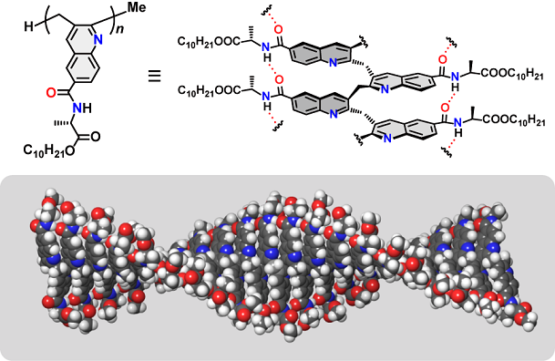
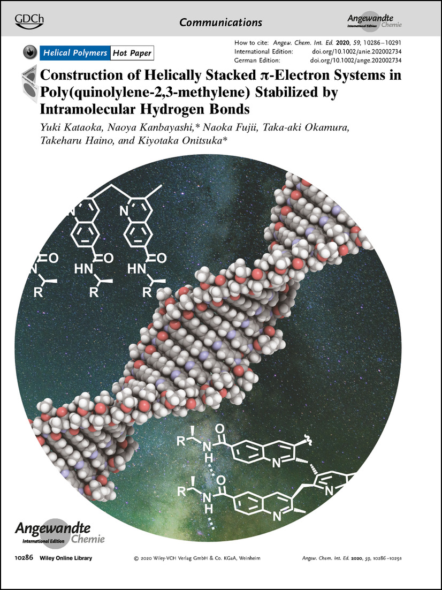

当研究室では以前に、オルト位にアレニル基を有するアリールイソシアニドをモノマーとしたリビング環化共重合反応により、主鎖にキノリレン-2,3-メチレン骨格を有する新しい高分子の合成に成功している。得られたポリ（キノリレン-2,3-メチレン）は、キノリン環が柔軟なメチレン鎖によって架橋されており、2残基先のキノリン環どうしが近接できる構造を有している。本論文では、側鎖にアラニン誘導体を有するイソシアニド－アレン二官能性モノマーを設計し、新しいπスタック高分子の構築を目指した。得られた高分子は、側鎖間の水素結合によりユニット間のπスタック構造が安定化され、主鎖のキノリン環がらせん状に成長した二次構造を構築することが明らかとなった。